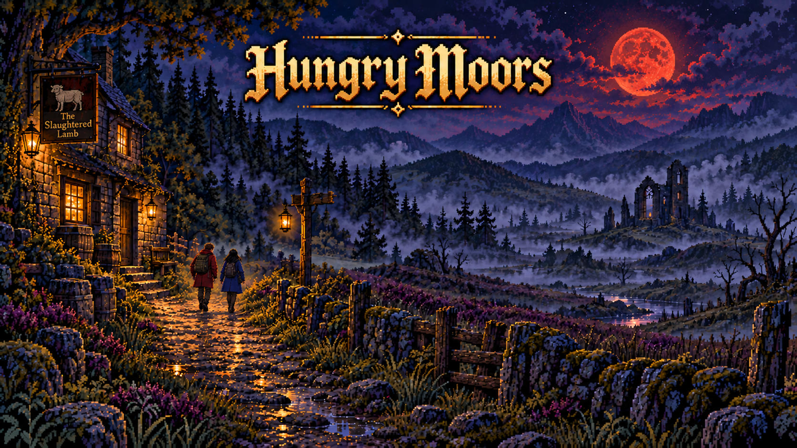

⚙

AN ADULT MOORLAND HORROR STORY
Hungry Moors
Choose Your Own Adventure
A married couple. A full moon. A road they were warned never to leave.
Choose what Casey and Rie do when the fog begins to answer them.
A dark story of pursuit, sacrifice and survival, beginning at The Slaughtered Lamb.